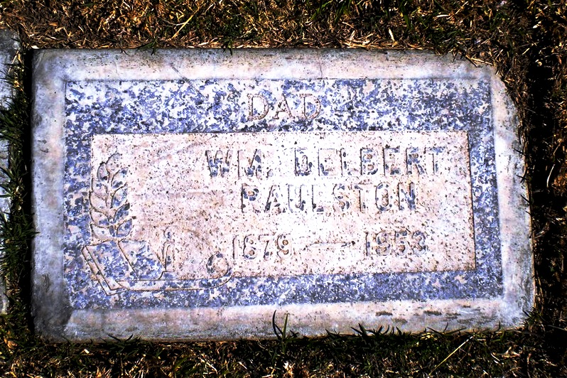

| 
William Delbert RAULSTON (1870-1953) |
William Delbert RAULSTON
Find A Grave, Memorial # 86505401 William married Mary Tennessee HACKWORTH. (Mary Tennessee HACKWORTH was born on 23 Oct 1888 in Missouri, died on 3 Feb 1961 in Arvin-Lamont, Kern County, California and was buried in Evergreen Memorial Park, Merced, Merced County, California.) |
 Research Notes:
Research Notes: